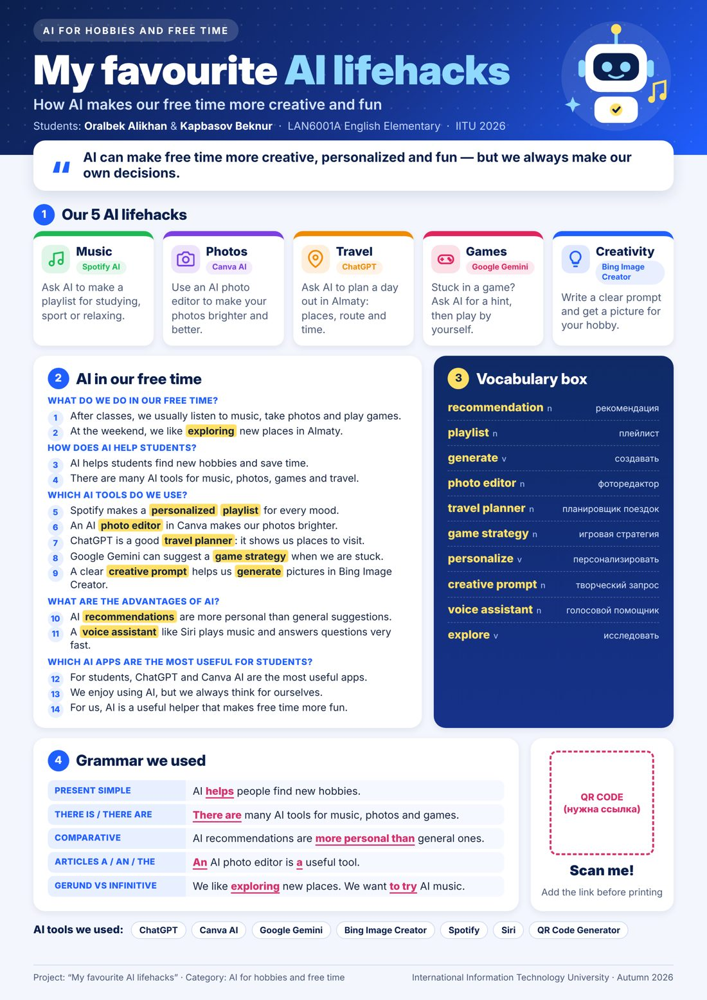

1Our 5 AI lifehacks
Music: make a playlist for your mood
Spotify AI ↗Open Spotify and find “AI Playlist” or “DJ”. Write what you need.
Make a calm playlist for studying in the evening. No songs with words.
Photos: make your photo brighter
Canva AI ↗Upload your photo, click “Edit” and use the AI tools to improve the light.
Make this photo brighter and more colourful, but keep it natural.
Travel: plan a day out in Almaty
ChatGPT ↗Write your plan in the chat: who, where, how much money and how much time.
Plan a day out in Almaty for two students. We have 10,000 tenge. Give us 4 places, a route and the time for each place.
Games: get a hint when you are stuck
Google Gemini ↗Ask for one small hint, not the full answer. Then play by yourself!
I am stuck in [game name], level [number]. Give me one small hint, not the answer.
Creativity: create a picture for your hobby
Bing Image Creator ↗Write a clear creative prompt: who, what, where and what style.
A cute robot playing the guitar in the mountains near Almaty, cartoon style, bright colours.
2AI in our free time
Our answers to the project questions.
- After classes, we usually listen to music, take photos and play games.
- At the weekend, we like exploring new places in Almaty.
- AI helps students find new hobbies and save time.
- There are many AI tools for music, photos, games and travel.
- Spotify makes a personalized playlist for every mood.
- An AI photo editor in Canva makes our photos brighter.
- ChatGPT is a good travel planner: it shows us places to visit.
- Google Gemini can suggest a game strategy when we are stuck.
- A clear creative prompt helps us generate pictures in Bing Image Creator.
- AI recommendations are more personal than general suggestions.
- A voice assistant like Siri plays music and answers questions very fast.
- For students, ChatGPT and Canva AI are the most useful apps.
- We enjoy using AI, but we always think for ourselves.
- For us, AI is a useful helper that makes free time more fun.
3Our vocabulary
10 new words from our project glossary.
recommendation n
a suggestion based on your interests or preferences
AI gives me music recommendations based on what I like.
playlist n
a collection of songs chosen to play together
AI creates a playlist for my workout or free time.
generate v
to create text, images, music or ideas using AI
I use AI to generate ideas for a creative project.
photo editor n
a tool used to improve or change photos
An AI photo editor can improve lighting in my pictures.
travel planner n
a tool that helps organize a trip or day out
An AI travel planner helps me choose places to visit.
game strategy n
a plan for playing a game more effectively
AI can suggest a game strategy when I am stuck.
personalize v
to change something to match a person’s interests
AI can personalize my music and video suggestions.
creative prompt n
a short instruction used to get an AI-generated result
I write a creative prompt to make an interesting image.
voice assistant n
an AI tool that responds to spoken questions or commands
A voice assistant can play music or answer quick questions.
explore v
to discover and learn about new things or places
AI helps me explore new hobbies, music and travel ideas.
4Grammar we used
| Present Simple | AI helps people find new hobbies. |
| There is / There are | There are many AI tools for music, photos and games. |
| Comparative | AI recommendations are more personal than general ones. |
| Articles a / an / the | An AI photo editor is a useful tool. |
| Gerund vs Infinitive | We like exploring new places. We want to try AI music. |
5Our rules for using AI
- Check the facts. AI is not always right.
- Don’t share your personal information (passwords, address, phone number).
- Use AI for ideas and help, but make your own decisions.
6Our poster

Download the poster (PDF, A3)